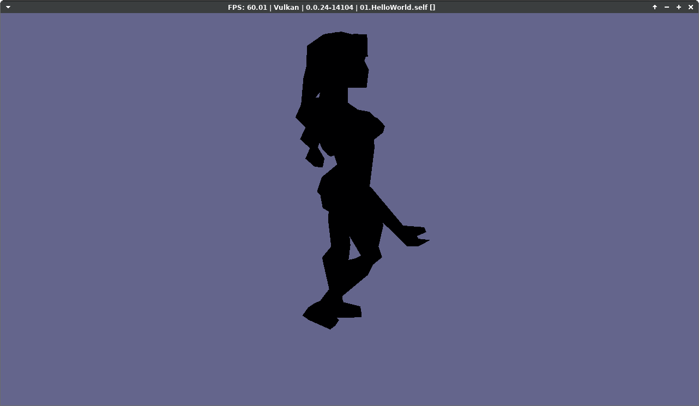

Irrlicht PS3
Attempting to port Irrlicht 1.8.5 to PS3 using psl1ght.
08/31/2022
Project files set up, CPS3Driver, CIrrDevicePS3, CPS3Texture stubs compiled.
09/03/2022
Added ps3 driver initialization to PS3 device, added psl1ght variables and basic clear/begin/end scene so the first tutorial example main loop runs and sets the background color. Md2 mesh loading also seems to be working without needing to change anything; Irrlicht seems to already handle big-endianness. Just needed to change the model file path explicitly to /dev_hdd0:
// tutorial 1 main.cpp
AnimatedMesh* mesh = smgr->getMesh("/dev_hdd0/Irrlicht01/sydney.md2");
// CMD2MeshFileLoader.cpp
file->read(&header, sizeof(SMD2Header));
#ifdef __BIG_ENDIAN__
header.magic = os::Byteswap::byteswap(header.magic);
...
09/04/2022
Untextured md2 model from first tutorial working. The pairing configuration of irrlicht and ps3 matrices was:
// CPS3Driver::setTransform()
MvpMatrix = Matrices[ETS_PROJECTION] * Matrices[ETS_VIEW] * Matrices[ETS_WORLD];
// CPS3Driver::drawHardwareBuffer()
core::matrix4 trans = MvpMatrix.getTransposed();
rsxSetVertexProgramParameter(
mContext,
shader->mVpo,
S3DShader::mvpMatUniform,
trans.pointer()
);
// s3d_shader.vert
gl_Position = vec4(aPos,1.0) * uMvpMatrix;
Also needed to force hardware buffers into being used. Not sure how (if at all) to handle drawing vertices directly yet. Textures TODO next.
09/05/2022
Got the model texture working. Only supports A8R8G8B8 format for now. Also TODO I think is to add more class members for the PS3 texture class for different uniform locations. Tested on my PS3 hardware to confirm it works on that: